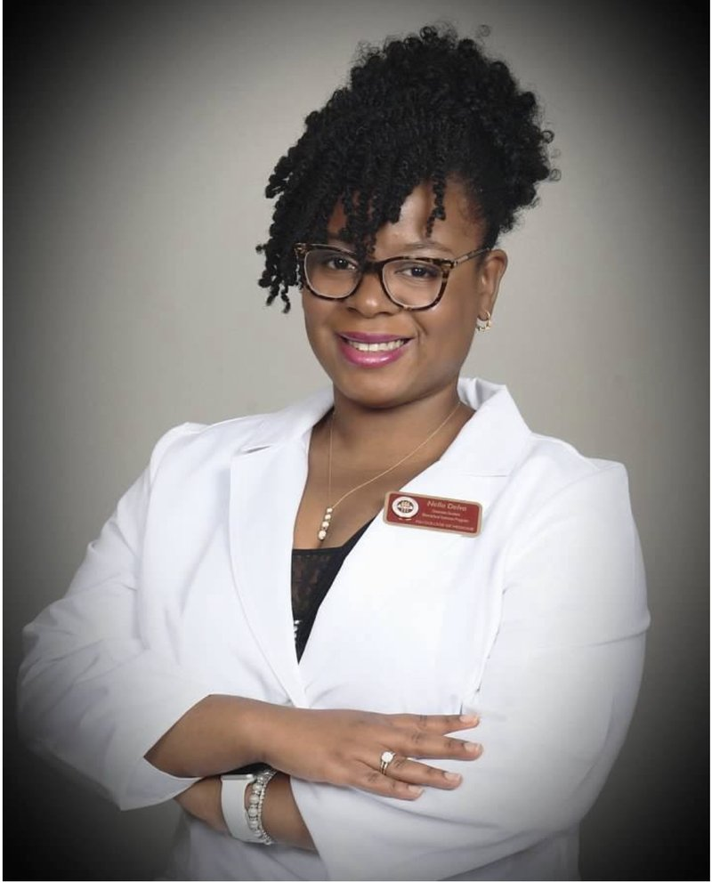

Fulbright Fellow — Max Delbrück Center of Molecular Medicine. Passionate, detail-oriented neuroscientist applying research and data skills to innovative life sciences projects.

Dissertation: Loss of Dopamine D1 Receptors in Nkx2.1+ Neurons Alters Mood-Related Behavior and Frontal Cortical Gene Expression
Thesis: Tp53 and HRas Influence on HPV16 E7 Expression in HPV16-Transformed Human Keratinocytes
Focus: Cortical cellular pathways. Techniques: human iPSC cell culture, advanced imaging techniques, and genetic analysis.
Focus: Neurobiology, genetic and behavioral studies. Key techniques: animal handling and behavior, brain anatomy and dissection, RNAscope, immunohistochemistry, qPCR, genotyping, ELISA, microscopy, and image analysis.
Focus: Genetic target and validation. Key techniques: DNA/RNA expression, transfection, tissue analysis, gene profiling, and cell culture.
Focus: HPV-mediated carcinogenesis. Key techniques: cloning, ELISA, protein quantification and analysis.
Courses: Biological Foundations (Lecture & Lab).
Courses: Biology Lab, Ecology Lab.
Molecular Biology: RNAscope, qPCR, ELISA, cDNA synthesis, Western blotting, immunohistochemistry, DNA/RNA/protein extraction and quantification, cloning and genotyping.
Imaging: Confocal microscopy, Keyence imaging, cellular phenotyping.
Behavioral Studies: Restraint stress, forced swim test, novel induced hyperphagia, locomotor, light/dark test.
Data Analysis: Statistical analysis (R, GraphPad), Python, SQL, machine learning, manuscript preparation and submission.
Research & Development: Experimental design, hypothesis testing, collaborative research across cross-functional teams.
Leadership: Team leadership, project management, communicating complex science to diverse audiences.